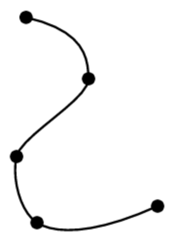
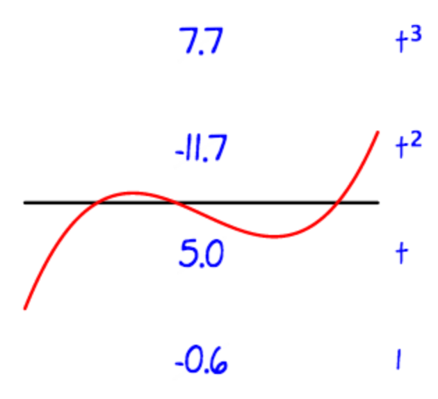
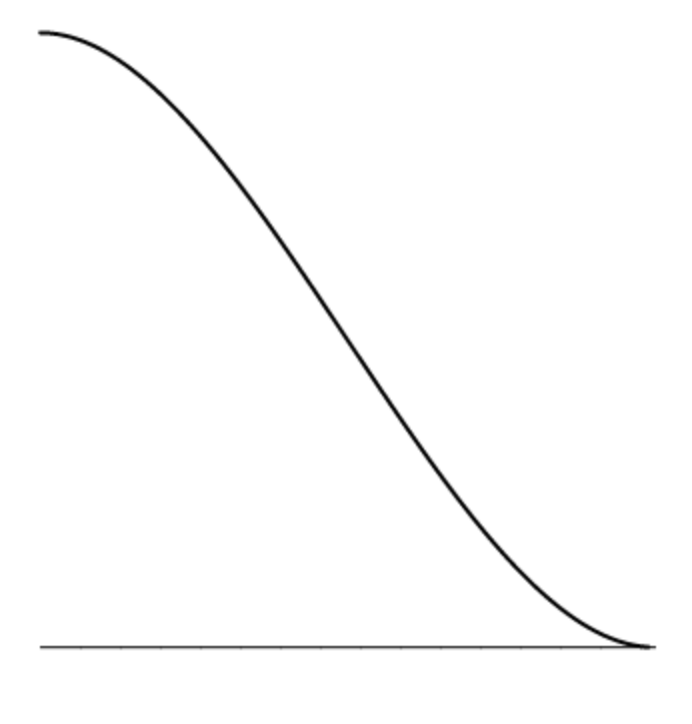
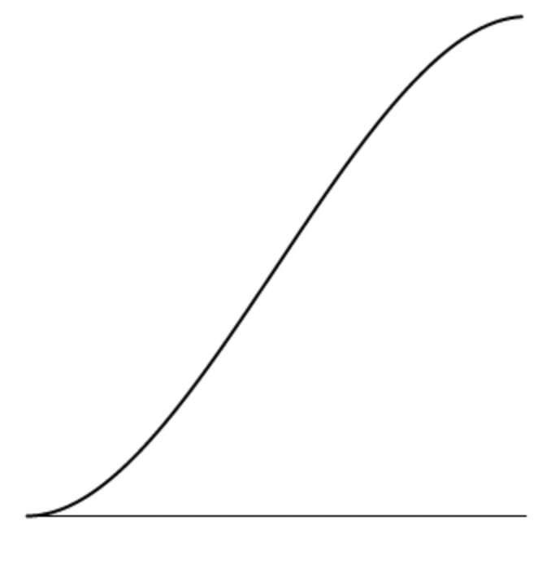
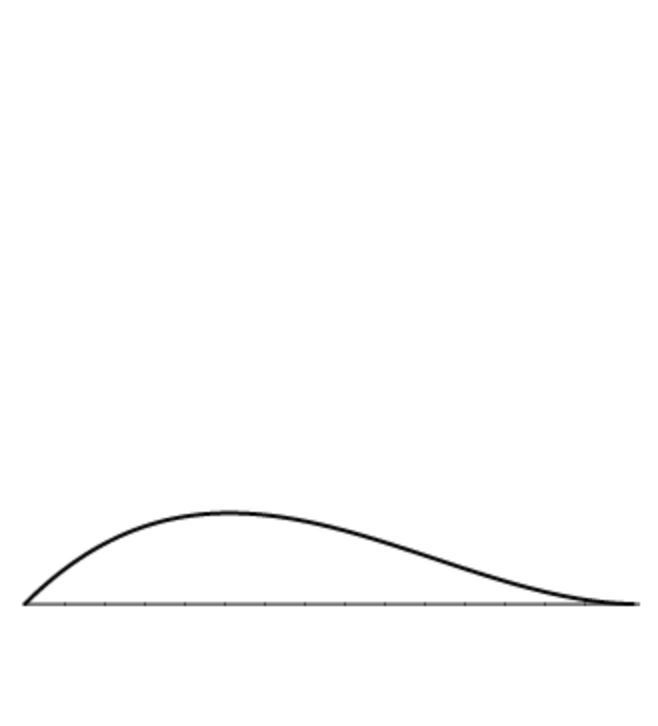
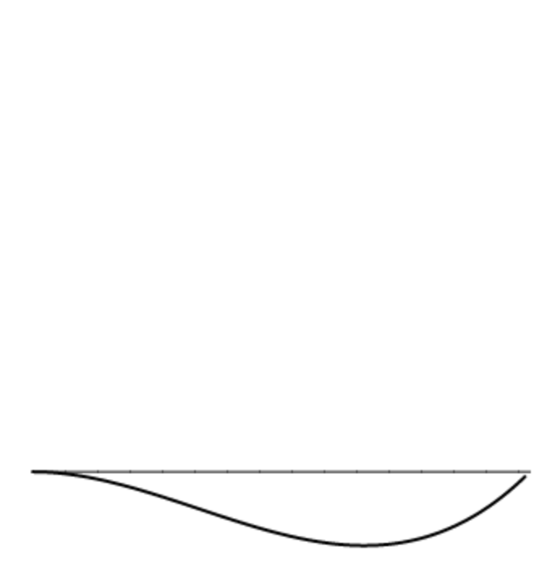
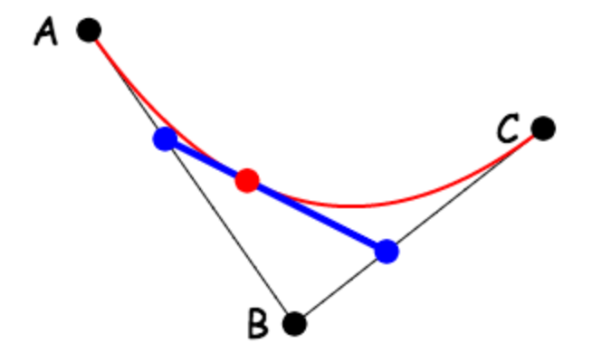
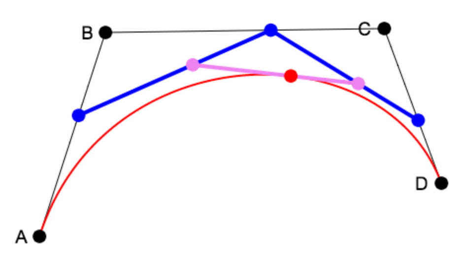

|
Notes for October 28 class -- Introduction to splines
|
Splines
There are many reasons we might want to create
smooth controllable curves in computer graphics.
Perhaps we might want to create an organic shape,
or animate something along a continuous path.
As you can see on the right, we can do this
by breaking down our smooth curve into simpler
pieces.
If we think of the spline curve as a path of motion,
each of these pieces must match its neighbors in both
position and rate, which means that for each
coordinate x and y, we need four values:
a position at both the start and the end,
and a rate (or derivative) at both the start and the end.
The smallest order polynomial that can
satisfy four constraints is a cubic.
So we describe both the x and y coordinates of
each piece using
parametric cubic polynomials in parameter t:
x = axt3 +
bxt2 +
cxt + dx
y = ayt3 +
byt2 +
cyt + dy
where (ax, bx, cx, dx)
and (ay, by, cy, dy)
are constant valued polynomial coefficients,
and t varies from t = 0 to t = 1 along
the curve.
|
|

|
|
Cubic splines
Although it is technically true that
cubic splines can be designed by tweaking
their polynial coefficients, in practice
that doesn't usually work out very well.
As you can see in the example on the right,
there is no intuitive connection between
the shape of a cubic polynomial and the values of its
four coefficients --
in this case 7.7, -11.7, 5.0 and -0.6, respectively,
for the
t3,
t2, t and constant term.
For that reason, we need a better way to specify cubic spline curves.
Rather than use
t3,
t2, t and 1 as our four basis functions,
we can use four different basis functions that have
a more intuitive geometric meaning.
In the following sections we will look at two
different examples of such alternate basis functions.
|
|

|
|
Hermite splines, part 1
We can choose four basis functions
that give us independent control over the position
at t = 0 and t = 1,
as well as the rate of change
at t = 0 and t = 1.
This is called the Hermite basis,
after the french mathematician who devised it.
If we want a curve with position A at t = 0,
position B at t = 1,
rate C at t = 0,
and rate D at t = 1,
we can use the four functions to the right
to compute the cubic polynomial we are looking for.
|
|
Position

2t3 - 3t2 + 1

-2t3 + 3t2
|
Rate

t3 - 2t2 + t

t3 - t2
|
|
Hermite splines, part 2
Because these four hermite basis polynomials never change,
and the cubic polynomial we want is just a weighted sum of those four polynomials,
we can express this weighted sum as a multiplication of the weights
by a matrix, which we call the Hermite matrix.
In other words, the expression:
A (2t3 - 3t2 + 1) +
B (-2t3 + 3t2) +
C (t3 - 3t2 + t) +
D (t3 - t2)
can be expressed as a matrix vector product:
to convert positions and rates at the two ends into the desired cubic polynomial:
at3 + bt2 + ct + d.
|
|
Bezier splines, part 1
Artists and designers often find it more convenient
to create splines by moving points around, rather
than needing to deal with derivatives.
The Bezier spline enables designers
of spline curves
to work this way.
Bezier splines work by repeated linear interpolation.
For example, the image to the right shows a simplified
version of a Bezier spline, using three key points
to specify a parametric quadratic spline.
Note that points along the curve are
found as a linear interpolation of linear interpolations.
We first find points along the edges AB and BC
by linear interpolations (to get the points represented as blue dots):
(1-t) A + t B
(1-t) B + t C
and then we interpolate again (to get the point represented as a red dot):
P =
(1-t) (
(1-t) A + t B
)
+
t
(
(1-t) B + t C
)
If we multiply out all the terms, we get:
A (1-t)2 + 2 B (1-t) t + C t2
Note that the weights of the coefficients (1 2 1) follow Pascal's triangle.
|
|

|
|
Bezier splines, part 2
Now it becomes easier to see what is going on with the full
parametric cubic Bezier spline,
which uses four key points:
The basic set-up is a
linear interpololation of
linear interpolations of
linear interpolations.
So we start with the points in blue:
P = (1-t) A + t B
Q = (1-t) B + t C
R = (1-t) C + t D
When the first and second terms are linearly interpolated,
we get the two dots in violet:
S = (1-t) P + t Q
T = (1-t) Q + t R
Finally we linearly interpolate these two points:
(1-t) S + t T
When we multiply everything out, writing the equation in terms of
our original four key points A,B,C and D,
the weights form the next level (1 3 3 1) of Pascal's triangle:
A (1-t)3 + 3 B (1-t)2 t + 3 C (1-t) t2 + D t3
|
|

|
|
Bezier splines, part 3
We can multiply out the terms of the above polynomial,
and regroup by powers of t, to get:
(-A + 3B - 3C + D) t3 +
(3A - 6B + 3C) t2 +
(-3A + 3B) t +
D
This makes it easy to see that,
as was the case for Hermite splines, the Bezier spline has a characteristic
matrix, which
can be used to translate the above polynomial until the
standard cubic polynomial, with coefficients, (a,b,c,d):
One powerful property of Bezier splines is that the
direction between A and B determines the direction of the
spline curve at t=0, and the
direction between C and D determines the direction of the
spline curve at t=1.
This makes it easy to match up splines end-to-end,
so that the resulting composite curve has a continuous derivative.
|
|
Perspective
As we mentioned in class, you can implement perspective by
doing the following just before you do the viewport transform:
- Translate all vertices by (0,0,-f), so that your scene is centered at z=-f,
where f is the "focal length" of the virtual camera.
- Apply the following transformation to each vertex:
x → fx/z
y → fy/z
z → f/z
As I mentioned in class, we know that step 2 above is a linear transformation,
because it is equivalent to the following matrix transformation:
| 1 | 0 | 0 | 0 |
|---|
| 0 | 1 | 0 | 0 |
|---|
| 0 | 0 | 0 | 1 |
|---|
| 0 | 0 | 1/f | 0 |
|---|
|
|
Object hierarchy
I am not going to ask you to do anything yet with object hierarchy
for your homework this week, but I do want you to understand what it is.
Essentially, we can describe an entire renderable scene as a tree of
objects, each of which has the following structure:
Object3D
Geometry
vertices
edges or faces
Material
Matrix
Object3D children[...]
|
|
Homework, due by start of class on Wednesday November 4
-
Animate the shapes you have already made by using time-varying
spline curves, using both
Hermite and the Bezier techniques.
You can use the values of the splines to feed into the
parameters of the translate, rotate and scale primitives that
you have already implemented.
Use your spline-based animation software to make interesting and compelling animations.
Do perspective.
-
Create your own curve editor, to create either Hermite or Bezier based curves.
Your editor should allow users to add, move, and delete key points,
and should allow users to specify whether two adjoining spline
curves have matching derivatives.
Use your editor to create interesting shapes,
such as outlines of animals, letters from fonts, or something
that you think would be cool and fun.
|
| |